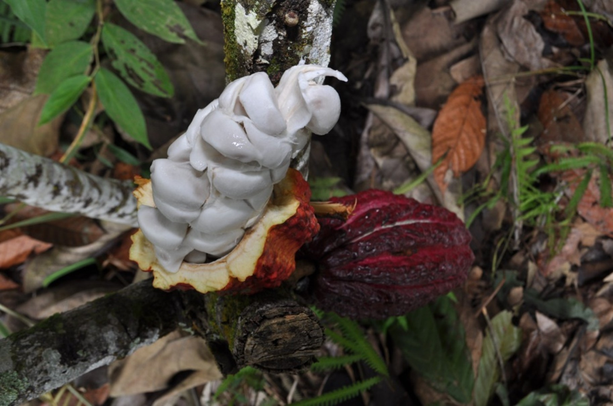
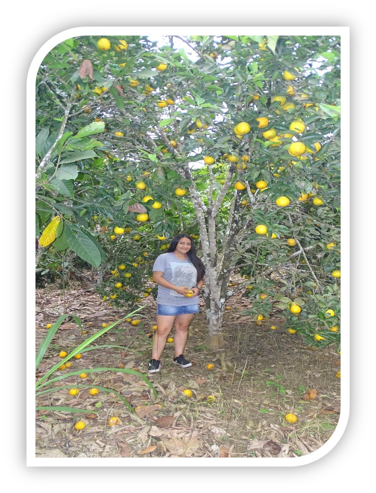
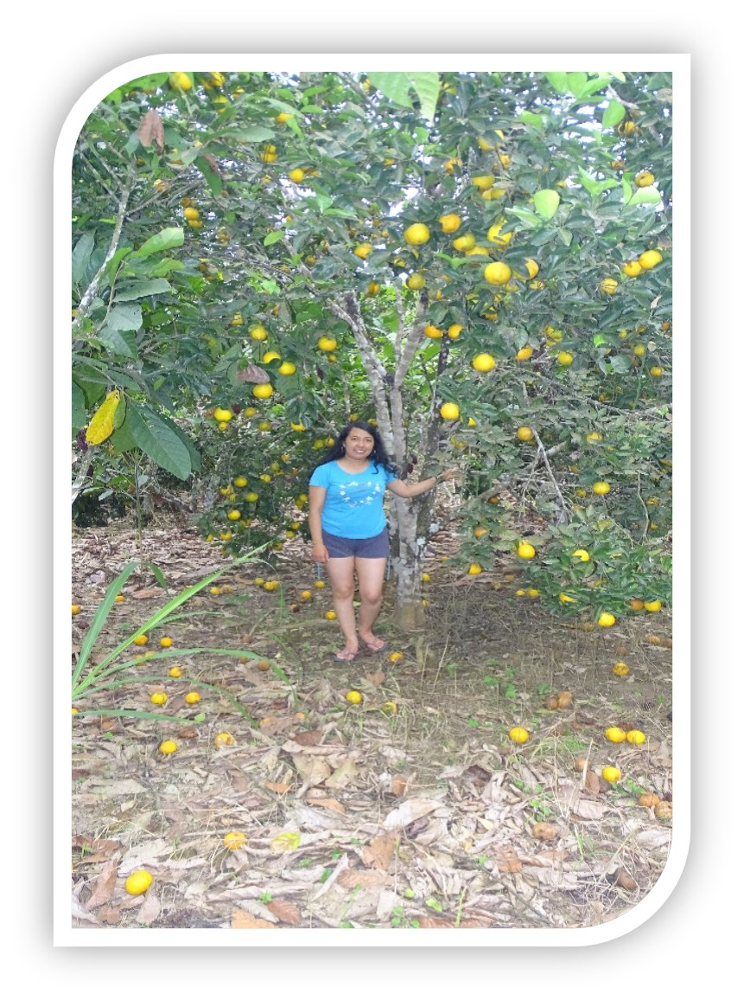
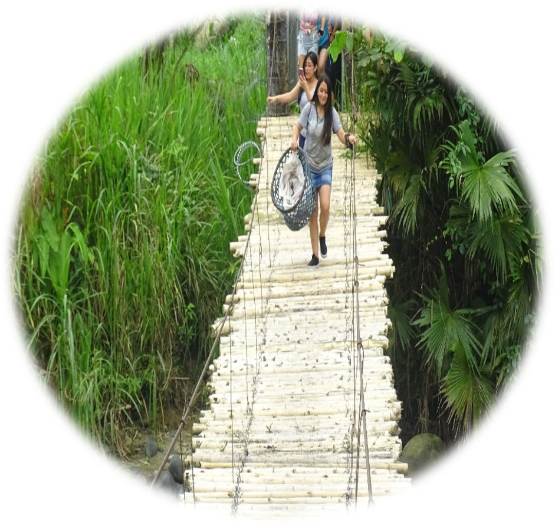
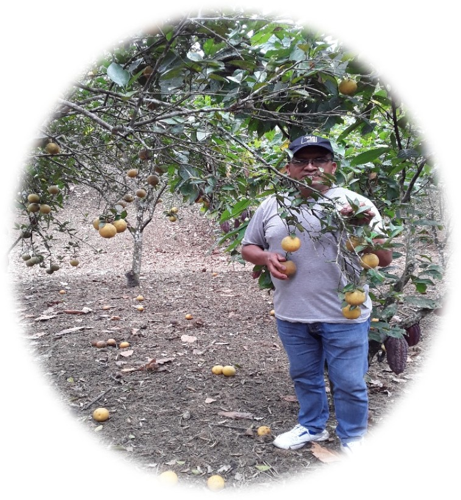
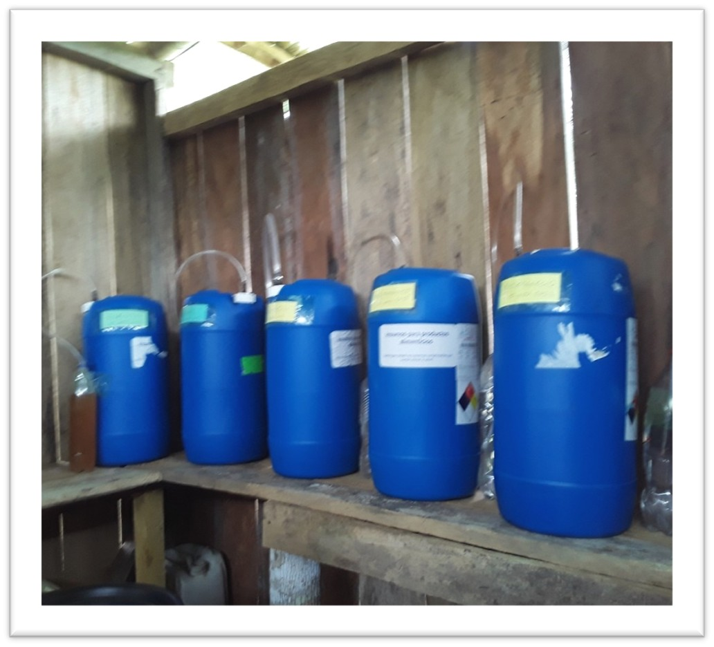
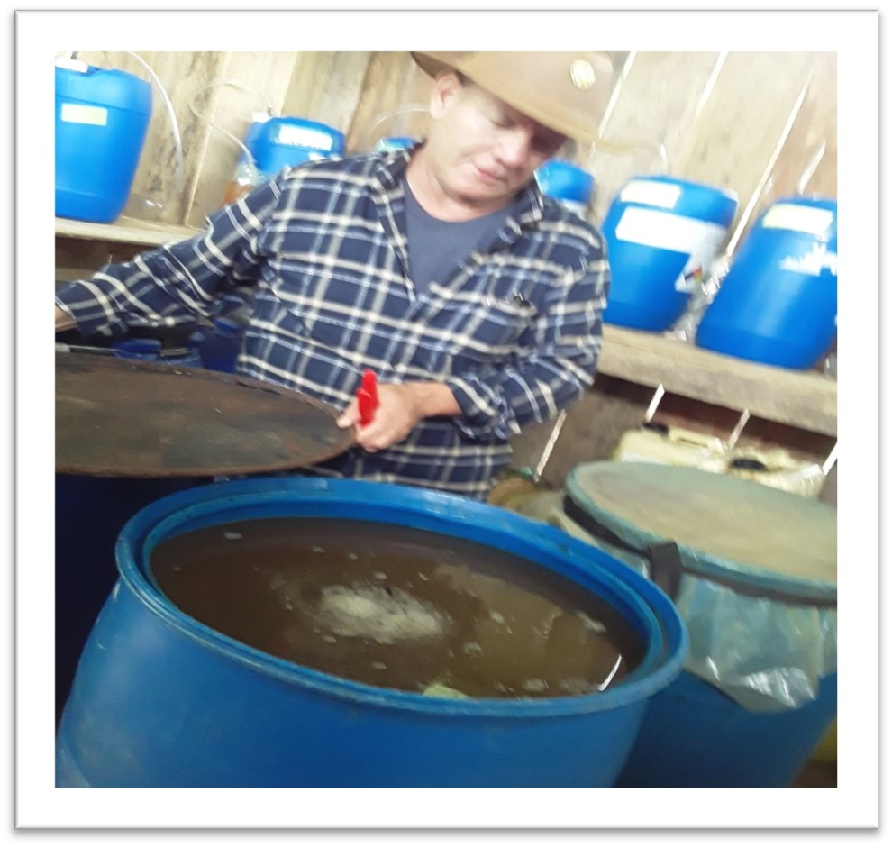
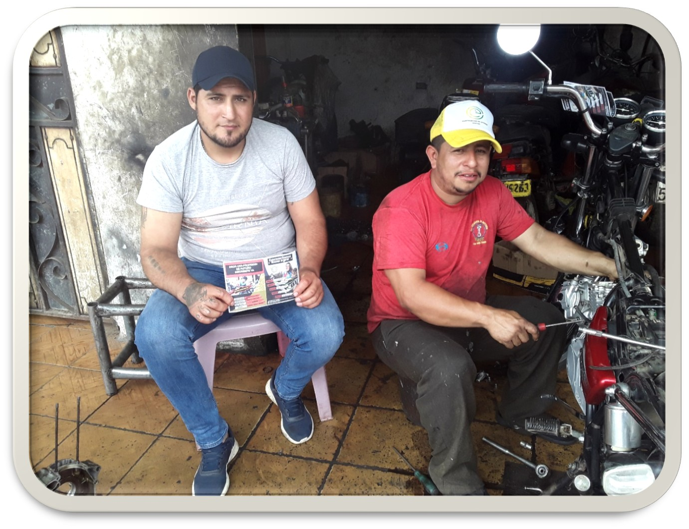

Trabajo de campo
Galería de Actividades
Un vistazo a nuestros proyectos, capacitaciones y vinculación directa con la comunidad en las zonas de impacto.








Conoce más sobre el impacto de la Fundación SRTV.
Volver al inicio